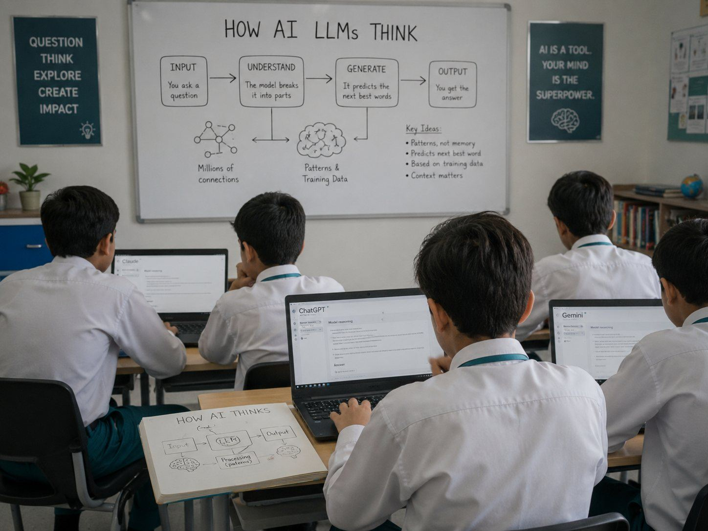

The deeper layer behind the activity.
Many schools already run activities, exhibitions, and science fairs and these have real value.
What Genesis builds is the deeper inquiry and decision-making layer behind them: a structure that ensures the project leads to genuine thinking, not just production.
Genuine PBL is not about what students make.
It is about what students cannot avoid thinking through. A strong project creates a structured situation where students must:

Confront a real problem
Not a textbook question, a genuine situation that has no single correct answer.
Make real decisions
Choose an approach, commit to it & take responsibility for the outcome.
Test their ideas
Build or apply something, observe what happens, and evaluate the result.
Revise based on evidence
Identify what did not work, understand why, and improve.
Explain their reasoning
Communicate not just what they did, but why, publicly, to others.
When a project is designed properly, a student cannot simply copy an answer. They must think.
And that thinking, repeated across projects, across grades, is what builds the capability that parents ask for and the curriculum demands.
Every concern, addressed directly.
The common concern is that PBL sounds expensive, complex, or disruptive. The Genesis approach addresses every one of these concerns directly.
Hands-on, project-specific training before implementation, and a Teacher Guide with step-by-step facilitation and rubrics for every project.
We work inside your existing timetable and teachers, delivering your existing curriculum through a richer process, curriculum aligned and SLO mapped.
Every project ends with a real audience presentation, and students who meet the rubric standard earn the Genesis Certificate.
Existing infrastructure is sufficient, with no extra labs, subscriptions, or imported equipment. Projects use a maximum of 5% of total academic sessions.